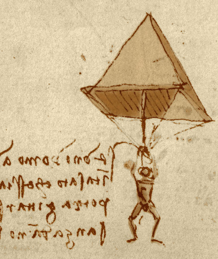
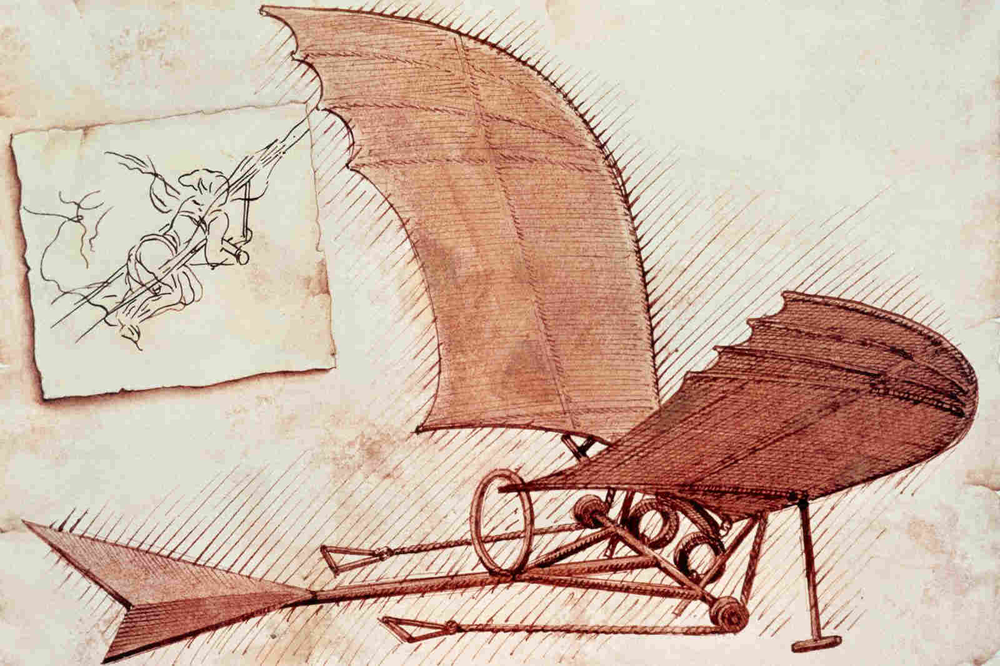

Leonardo da Vinci fue un polímata florentino del Renacimiento italiano. Fue a la vez pintor, anatomista, arquitecto, paleontólogo, artista, botánico, científico, escritor, escultor, filósofo, ingeniero, inventor, músico, poeta y urbanista. Murió acompañado de Francesco Melzi, a quien legó sus proyectos, diseños y pinturas. Tras pasar su infancia en su ciudad natal, Leonardo estudió con el pintor florentino Andrea de Verrocchio. Sus primeros trabajos de importancia fueron creados en Milán al servicio del duque Ludovico Sforza. Trabajó a continuación en Roma, Bolonia y Venecia, y pasó sus últimos años en Francia, por invitación del rey Francisco I.
Frecuentemente descrito como un arquetipo y símbolo del hombre del Renacimiento, genio universal, además de filósofo humanista cuya curiosidad infinita solo puede ser equiparable a su capacidad inventiva, Leonardo da Vinci es considerado uno de los más grandes pintores de todos los tiempos y, probablemente, la persona con el mayor número de talentos en múltiples disciplinas que jamás ha existido. Como ingeniero e inventor, Leonardo desarrolló ideas muy adelantadas a su tiempo, tales como el helicóptero, el carro de combate, el submarino y el automóvil. Muy pocos de sus proyectos llegaron a construirse, puesto que la mayoría no eran realizables en esa época. Como científico, Leonardo da Vinci hizo descubrimientos sustanciales en las áreas de anatomía, la ingeniería civil, la óptica y la hidrodinámica, pero puesto que no publicó jamás sus hallazgos estos tuvieron escasa influencia, si es que alguna, en la ciencia posterior.
Su asociación histórica más famosa es la pintura. Dos de sus obras más conocidas, La Gioconda y La Última Cena, han sido copiadas y parodiadas en varias ocasiones, al igual que su dibujo del Hombre de Vitruvio. No obstante, únicamente se conocen alrededor de 20 obras suyas, debido principalmente a sus reiterados experimentos con nuevas técnicas y a su inconstancia crónica. Este reducido número de creaciones, junto con sus cuadernos con dibujos, diagramas científicos y reflexiones sobre la naturaleza de la pintura, constituyen un legado para las sucesivas generaciones de artistas.
| Información Personal | |
|---|---|
| Nombre de Nacimiento | Leonardo di ser Piero da Vinci |
| Nacimiento | 15 de abril de 1452 Anchiano (República de Florencia) |
| Fallecimiento | 2 de mayo de 1519 (67 años) Amboise (Francia) |
| Información profesional | |
| Ocupación | Arquitecto escultor ingeniero inventor pintor |
| Años activo | hasta 1519 |
| Movimiento | Renacimiento italiano |
- La Gioconda
- La última cena
- Hombre de Vitruvio
- Salvador Mundi
- La dama del armiño


- Paracaídas 
- Ornitóptero 
- Triple cañón
- Traje acuático
- Gran órgano continuo